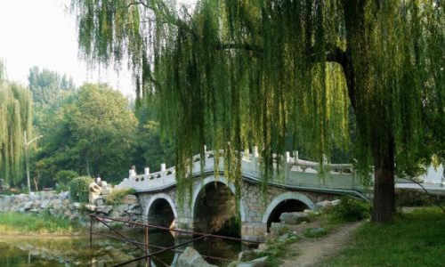
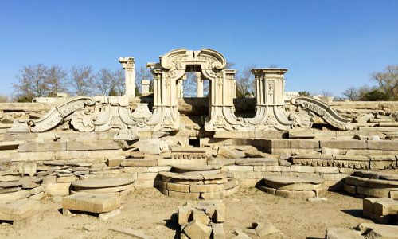
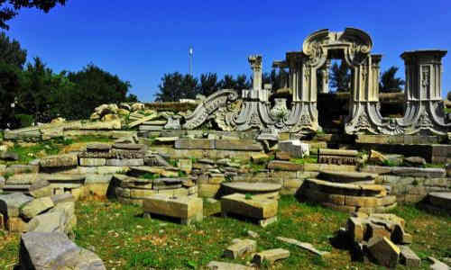
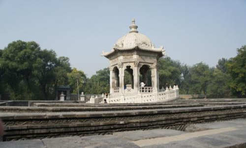

morly旅游圈
1860年英法联军将主要建筑烧为灰烬，如今游客前来只能在残骸中凭吊，寻找当年辉煌的帝国身影。 绮春园中各处小景点众多，是一个小型水景园的大集合。如今，是圆明园每年一届的荷花节主场地。 长春园以大型水景为主体，大家耳熟能详的“大水法”，即位于此。 圆明园如今只剩下断壁颓垣，它见证了中华民族的屈辱历史。圆明园里面面积很大，但是只剩下一片废墟。就风光而言，夏天去圆明园看荷花很好。
走进圆明园: 圆明园坐落在北京西郊海淀区，与颐和园紧相毗邻。 始建于康熙46年（1709年），亦称“圆明三园”，是圆明园及其附园长春园、万春园的统称，是清朝帝王在150余年间创建和经营的一座大型皇家宫苑。 圆明园继承了中国三千多年的优秀造园传统，既有宫廷建筑的雍容华贵，又有江南水乡园林的委婉多姿，又吸取了欧洲的园林建筑形式，曾以其宏大的地域规模、精美的建筑景群、丰富的文化收藏和民族文化内涵而享誉于世，被誉为“一切造园艺术的典范”和“万园之园”。 圆明园于即1860年的10月，遭到英法联军的洗劫和焚毁。1988年建成圆明园遗址公园，仅存山形水系、园林格局和建筑基址，假山叠石、雕刻残迹仍然可见。 “圆明园”，是由康熙皇帝命名的。玄烨御三字匾额，就悬挂在圆明园殿的门楣上方。“圆明”是雍正皇帝自皇子时期一直使用的佛号，雍正皇帝崇信佛教，号“圆明居士”。康熙皇帝在把园林赐给胤禛（后为雍正皇帝）时，亲题园名为“圆明园”正是取意于雍正的佛号“圆明”。 圆明园的园林造景多以水为主题，因水成趣，其中不少是直接吸取江南著名水景的意趣。圆明园后湖景区，环绕后湖构筑九个小岛，是全国疆域《禹贡》“九洲”之象征。各个岛上建置的小园或风景群，既各有特色，又彼此相借成景。 圆明园西部的万方安和，雍正皇帝喜欢在此居住。圆明园北部的水木明瑟，用泰西（西泽）水法引水入室，转动风扇。乾隆皇帝喜欢在此消暑。 圆明园还有个显著特点，就是大量仿建了全国各地特别是江南的许多名园胜景。乾隆皇帝弘历曾经六次南巡江浙，多次西巡五台，东巡岱岳，巡游热河、盛京（即沈阳）和盘山等地。每至一地，凡他所中意的名山胜水、名园胜景，就让随行画师摹绘成图，回京后在园内仿建。 必游景观大水法：大水法：位于远瀛观高台之南，为石龛式，内有一座七级水盘，顶端有一大型狮子头，水盘喷水可以形成七层水帘。蓬岛瑶台遗址：蓬岛瑶台一景，正是仿照唐代著名画家李思训的“一池三山”画意建造的。园盛时，福海端午龙舟竞渡，皇帝率王公大臣在西岸“望瀛洲”亭观阅，皇太后及后妃内眷则在蓬岛瑶台欣赏。 圆明园不仅以园林著称，而且也是一座收藏相当丰富的皇家博物馆。法国大作家雨果曾说：“即使把我国所有圣母院的全部宝物加在一起，也不能同这个规模宏大而富丽堂皇的东方博物馆媲美”。 园内各殿堂内装饰有难以计数的紫檀木家具，陈列有许多国内外稀世文物。园中文源阁是全国四大皇家藏书楼之一。
盛时园林生物: 盛时的圆明园，还堪称当时的皇家植物园和珍稀动物园。园内牡丹台、竹子院、梧桐院、杏花村、桃花坞、芰荷香、君子轩、松风萝月，以及深柳读书堂等多处景点，均以植物风景特色成名。全园植物，除了松、竹、柳、荷、梧桐、侧柏、国槐、枫树、海棠、山桃、文杏、玉兰、牡丹、月季、菊花、兰花、藤萝等百余种乡土花草树木之外，还引进培植了江南的梅花与芭蕉，塞北的敖汉荷花与乌沙尔器，五台山的金莲花，新疆的桑树，南亚的波斯桃，西洋的含羞草等20余种树木花卉。所谓“二十四番风信咸宜，三百六十日花开竞放”，说的就是圆明园四时不尽的繁花、蓊郁葱茏的绿树，与层层冈阜、潺潺流水和鸟语禽鸣，交织成一幅大自然的美景，令人陶醉。圆明园内的珍稀动物，则有白猿、麋鹿、朱鹮、仙鹤、孔雀、天鹅以及五色锦鲤。光是西洋楼养雀笼一处，常年笼养的各种鸟类，就有400多只。
最佳季节: 四季皆宜。 圆明园春天草长莺飞，一片暖春景色。每年有踏青节，非常热闹。 夏季树翠水丰，可在皇家园林避暑乘凉。 秋天圆明园中菊花盛开，秋高气爽。 冬天的圆明园雪景更是所有摄影师的梦想景观。
交通: 到达绮春园宫门：乘319、320、331、432、438、498、601、626、628、664、690、696、697、特6路在圆明园南门站下，或乘地铁4号线圆明园南门站C口、圆明园站B口出。
门票: 大门门票:10人民币；月票:15人民币；西洋楼遗址景区:15人民币；圆明园盛时全景模型展:10人民币 (1月1日-12月31日 周一-周日) 半票:18周岁以下未成年人、全日制大学本科及以下学历学生、60周岁至64周岁的老年人，凭有效证件购买半价票。
开放时间: 07:00-19:30；停止售票时间:17:30 (1月1日-3月31日,11月1日-12月31日 周一-周日) 07:00-20:30；停止售票时间:18:30 (4月1日-4月30日,9月1日-10月31日 ) 07:00-21:00；停止售票时间:19:00 (5月1日-8月31日 )
内容整理至网络，如有侵权，请联系我们！1255394075@qq.com
   